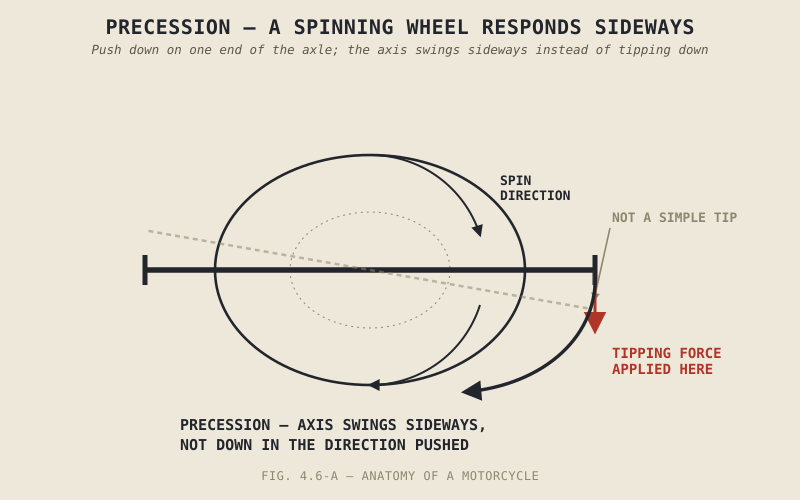

Try to tip a spinning bicycle wheel over by pushing on one side of its axle, and it doesn't simply fall the direction you pushed — it swings sideways instead, turning in a direction that feels like it's fighting the laws of physics rather than following them. It isn't. This is precession, one of the stranger consequences of angular momentum, and it's a real, contributing piece of why a rolling motorcycle behaves the way it does. It's also the piece most badly oversold by popular explanations of countersteering, and this chapter is as much about putting it in its proper, modest place as it is about explaining it.
Chapter 4.4 explained trail's contribution to a rolling motorcycle's self-stability, and Chapter 4.5 explained countersteering's role in actively initiating a lean. Neither chapter needed gyroscopic effects to make its case, and that omission was deliberate — this chapter finally brings gyroscopic precession into the picture, as a real supporting factor rather than the star of the show pop-science explanations often make it out to be.
Precession: Why Spinning Objects Respond Sideways
A spinning object carries angular momentum along its axis of rotation, and that angular momentum resists being reoriented — push on a spinning wheel's axle to tip it one way, and rather than tipping cleanly in that direction, the wheel's axis instead swings to the side, at roughly ninety degrees from the direction you pushed. This sideways response, called precession, is a genuine, well-understood consequence of angular momentum, not an illusion or a trick of perception, and it applies directly to a motorcycle's spinning wheels.
Applied to a moving motorcycle, precession means that a disturbance trying to lean the bike over doesn't purely produce a lean — a share of that disturbance gets converted, through precession, into a small steering response at the front wheel. That steering response is a genuine, additional contributor to the self-stabilizing behaviour Chapter 4.4 described trail producing, working alongside trail rather than replacing it.
Gyroscopic Effects in Countersteering
The same precession mechanism runs in reverse during countersteering. When Chapter 4.5 described pushing the handlebar to steer the front wheel, that steering input isn't purely converted into the contact-patch displacement Chapter 4.5 explained — some of it also produces a lean response directly through precession, since the front wheel's spinning mass resists the reorientation the steering input is asking of it, and that resistance shows up partly as a lean. In practice, real-world countersteering is the combined product of both mechanisms working together: the contact-patch and inertia effect Chapter 4.5 described, and this chapter's gyroscopic precession, both pushing the bike to lean in the same direction at once.
A spinning wheel doesn't just resist being knocked off its axis — it responds to that push sideways, converting a lean disturbance partly into steering, and a steering input partly into lean. Both directions of that conversion are quietly at work every time a motorcycle corners.

A spinning wheel shown with a tipping force applied at one point on its axle, and the resulting precession response shown as a sideways swing of the axis rather than a simple tip in the direction of the applied force.
Wheel Spin and Resistance to Being Knocked Sideways
Beyond precession specifically, a spinning wheel's angular momentum gives it a general resistance to having its orientation changed at all — a stationary wheel offers no such resistance, and a spinning one genuinely does, growing stronger as spin speed increases. This is one more piece of the puzzle behind Chapter 1.2's original observation that a motorcycle feels top-heavy and unstable standing still but composed and stable once rolling: the faster the wheels spin, the more their own angular momentum contributes to resisting disturbances, adding to trail's contribution rather than being the whole explanation on its own.
A Common Misconception, Cleared Up Early
Gyroscopic precession is one of the most frequently oversold explanations in popular motorcycle physics writing, often presented as though it were the entire reason countersteering works — push the bar, the gyroscope does the rest. It's a real, genuine contributor, but for a typical motorcycle at typical riding speeds, the trail and contact-patch mechanisms Chapter 4.4 and Chapter 4.5 described do the larger share of the actual work, with gyroscopic effects contributing a real but smaller portion, one that becomes more noticeable as wheel spin speed increases at higher road speeds. Treating gyroscopic precession as the whole explanation for countersteering isn't just an oversimplification — it skips past trail and contact-patch geometry, the mechanisms actually doing most of the job, in favour of the more exotic-sounding physics that happens to make for a better pop-science headline.
Where This Leads
Trail, countersteering, and gyroscopic effects together explain why and how a motorcycle leans and turns. What none of the last three chapters addressed is how far it can actually lean before something touches the ground, and what happens to the tyre's contact patch as lean angle increases. Chapter 4.7 covers exactly that.
Key Concepts to Remember
- Precession is the tendency of a spinning object's axis to respond to an applied force by swinging sideways, roughly ninety degrees from the direction of the push, rather than tipping directly in that direction.
- Precession converts a portion of a lean disturbance into steering response, and a portion of a steering input into lean response, contributing to both the self-stability Chapter 4.4 described and the countersteering mechanism Chapter 4.5 described.
- Spinning wheels resist reorientation generally, adding a further contribution to why a rolling motorcycle feels stable in ways a stationary one doesn't, alongside trail.
- Gyroscopic effects are real but secondary contributors to countersteering and stability for a typical motorcycle at typical speeds — trail and contact-patch geometry do the larger share of the actual mechanical work, despite gyroscopic precession being the more popularly cited explanation.
Cross-References
| ← Ch. 1.2 | First described a motorcycle's stability changing dramatically with speed; this chapter adds gyroscopic wheel-spin resistance as a further contributor to that observation, alongside trail. |
| ← Ch. 4.4 | Explained trail's self-centering mechanism; this chapter adds precession as a genuine but secondary supporting factor to that same stability. |
| ← Ch. 4.5 | Explained countersteering through contact-patch displacement; this chapter shows precession contributes an additional, smaller share to the same lean response. |
| → Ch. 4.7 | Turns to lean angle and cornering clearance, the practical consequence of the leaning behaviour this chapter and the previous two chapters have fully explained. |